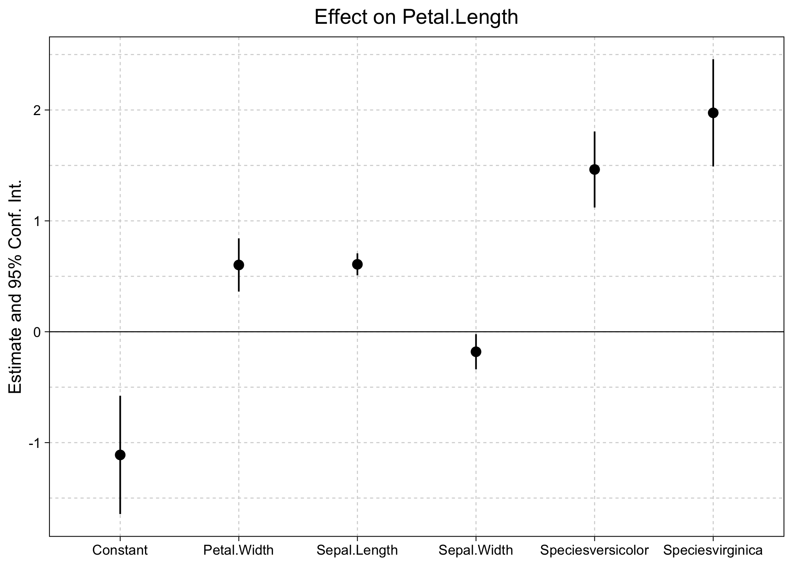
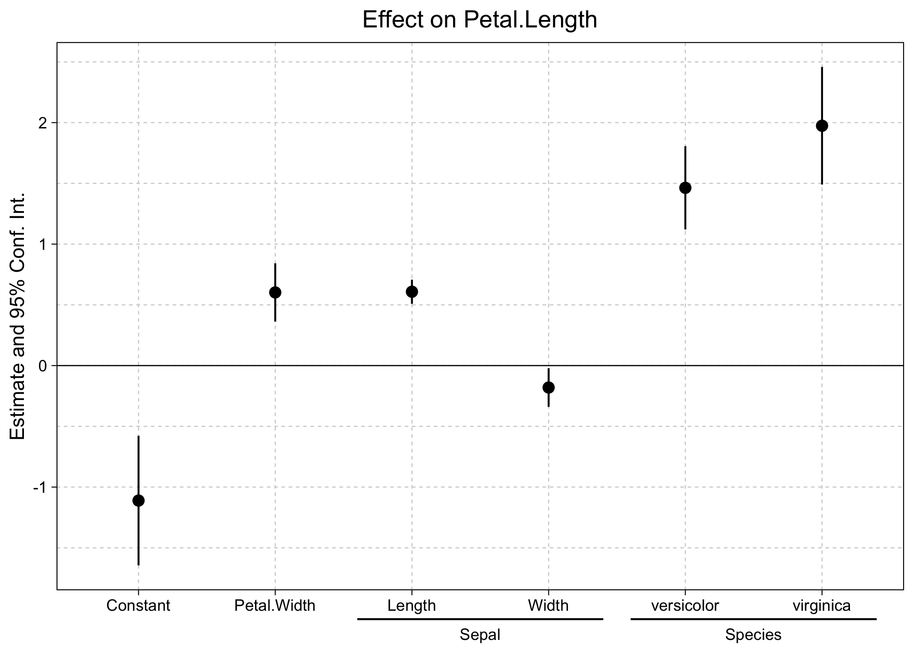
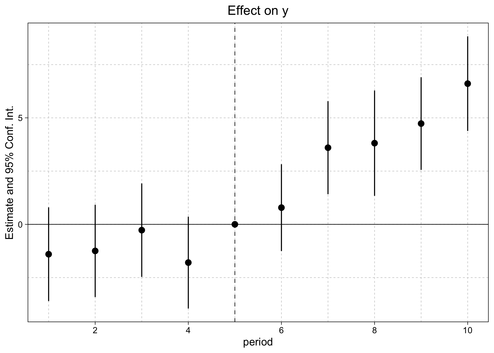
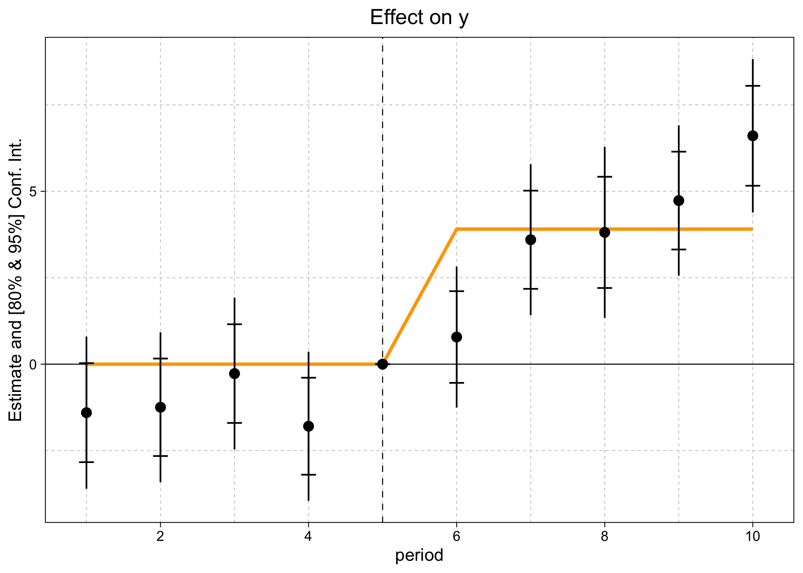
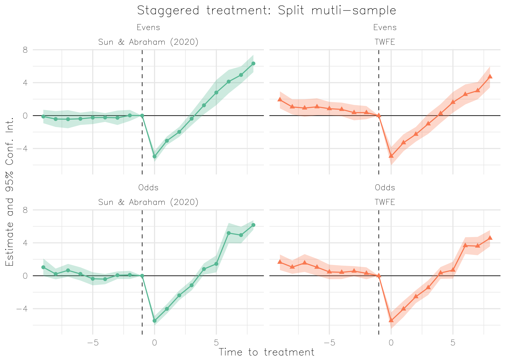

The ggfixest package provides dedicated ggplot2 plotting methods for fixest objects. Specifically, it provides drop-in “gg” equivalents of the latter’s coefplot and iplot base plotting functions.
The goal of ggfixest is to produce nice looking coefficient plots and interaction plots—including event study plots—with minimal effort and scope for further customization.
Installation
The stable version of ggfixest is available on CRAN.
install.packages("ggfixest")Or, you can grab the latest development version from R-universe.
install.packages("ggfixest", repos = "https://grantmcdermott.r-universe.dev")Quickstart
The package website provides a number of examples in the help documentation. (Also available by typing ?ggcoefplot or ?ggiplot in your R console.) But here are a few quickstart examples to whet your appetite.
Start by loading the ggfixest package.
Note that this automatically loads ggplot2 and fixest as required dependencies too. As the package name suggests, ggfixest only supports fixest model objects.1
Coefficient plots
Use ggcoefplot to draw basic coefficient plots.
est = feols(
Petal.Length ~ Petal.Width + Sepal.Length + Sepal.Width + Species,
data = iris
)
# coefplot(est) ## base version
ggcoefplot(est) ## this package
The above plot call and output should look very familiar to regular fixest users. Like its base equivalent, ggcoefplot can be heavily customized and contains various shortcuts for common operations. For example, we can use regex to control the coefficient grouping logic.
ggcoefplot(est, group = list(Sepal = "^^Sepal.", Species = "^^Species"))
Event study plots
The ggiplot function is a special case of ggocoefplot that only plots coefficients with factor levels or interactions (specifically, those created with the i operator). This is especially useful for producing event study plots in a difference-in-differences (DiD) setup.
est_did = feols(y ~ x1 + i(period, treat, 5) | id+period, base_did)
# iplot(est_did) ## base version
ggiplot(est_did) ## this package
Again, the above plot call and output should look very familiar to regular fixest users. But note that ggiplot supports several features that are not available in the base iplot version. For example, plotting multiple confidence intervals and aggregate treatments effects.

And you can get quite fancy, combining lists of complex multiple estimation objects with custom themes, and so on.
base_stagg_grp = base_stagg
base_stagg_grp$grp = ifelse(base_stagg_grp$id %% 2 == 0, 'Evens', 'Odds')
est_twfe_grp = feols(
y ~ x1 + i(time_to_treatment, treated, ref = c(-1, -1000)) | id + year,
data = base_stagg_grp, split = ~grp
)
est_sa20_grp = feols(
y ~ x1 + sunab(year_treated, year) | id + year,
data = base_stagg_grp, split = ~grp
)
ggiplot(
list("TWFE" = est_twfe_grp, "Sun & Abraham (2020)" = est_sa20_grp),
ref.line = -1,
main = "Staggered treatment: Split mutli-sample",
xlab = "Time to treatment",
multi_style = "facet",
geom_style = "ribbon",
facet_args = list(labeller = labeller(id = \(x) gsub(".*: ", "", x))),
theme = theme_minimal() +
theme(
text = element_text(family = "HersheySans"),
plot.title = element_text(hjust = 0.5),
legend.position = "none"
)
)
For more ggiplot examples and comparisons with its base counterpart, see the detailed vignette on the package homepage (or, by typing vignette("ggiplot") in your R console).